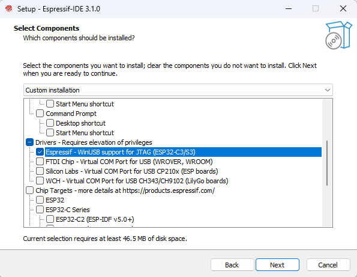
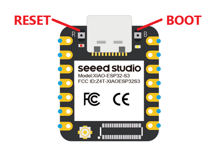

１．ドライバのインストール
下記サイトから「ESP-IDF Tools Installer」をダウンロードしてドライバのみをインストールして下さい。
※ 既にESP32S3を使用したPCであれば不要です。
ESP-IDF Tools Installer

２．ファームウェアの書き込み
ESP32S3をPCに接続してBOOTボタンを押しながらRESETボタンを押して下さい。ESP32S3が書き込みモードで起動します。

書き込みモードになったら下記のボタンをクリックしてファームウェアを書き込んでください。
「Write Complated.」と表示されたら書き込み完了です。ESP32S3をPCから一度外して付け直すとキーボードAZSENSORとして認識されます。
AZSENSOR ファームウェア 書込み
↑